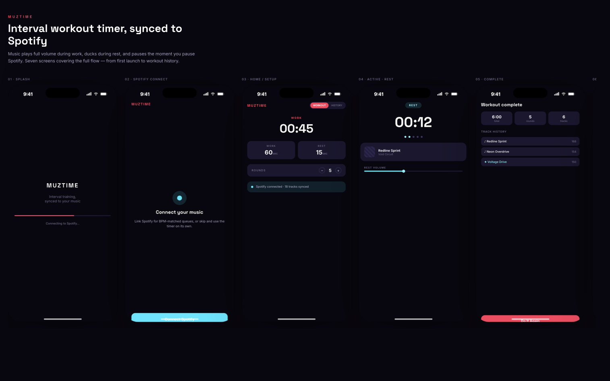
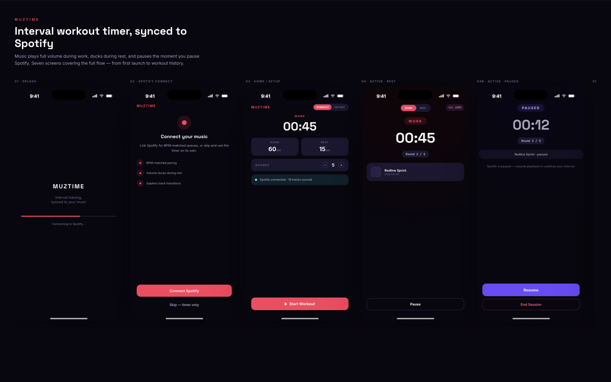
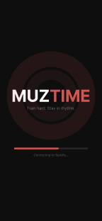
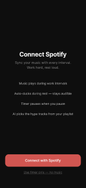
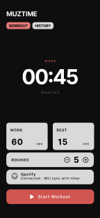
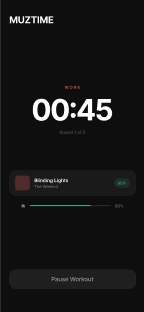
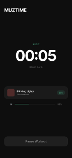
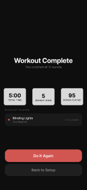
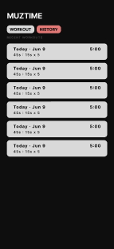
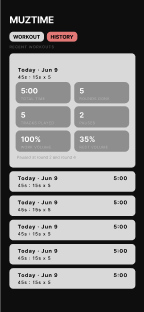

01 — Overview
Interval workouts usually mean running two apps that ignore each other: a timer and a music player. When I paused the music, the timer kept counting. When the timer switched to rest, nothing in my ears told me so. I spent sets glancing at my phone instead of training. MuzTime merges the two into one session, so the music itself tells you where you are in the workout.
The Challenge
Interval timers and music apps don’t sync, and you can’t hear where a work or rest interval begins or ends.
The Goal
One session where the timer and Spotify react to each other automatically. There’s enough manual control (volume drop, playlist choice) to feel personal, without having to babysit two apps between sets.
02 — Features
Linked Pause
The timer pauses as soon as Spotify pauses, during both work and rest. There’s no separate control to tap mid-set.
Volume Drop at Rest
During rest the music volume drops, then comes back up when the next work interval starts. You hear the change, so you don’t have to look at the screen.
Your Playlist, Your Order
The session plays from a playlist you choose. If you don’t use music, a muted mode runs the timer on its own.
Explored, then blocked: skipping quiet song intros so every round starts on the beat, and an AI-sorted queue that orders songs by energy. Both are in section 04.
03 — Design Process
I started by generating two full screen sets with Claude Design. I used them to quickly learn what a sporty, professional fitness interface looks like: type weight, contrast, how a large countdown sits next to secondary information. From those passes I settled the flow, then redesigned it by hand in Figma after trying the working web version.
I built MuzTime as a web app because that was the faster path to a working, testable product: a browser handles audio, timers, and the Spotify connection without a native build. But a workout timer is used on a phone, propped up mid-set, so I also designed the experience as a mobile UI. The eight screens below are that mobile design; they are a design translation of the web version, not a shipped native app.

Claude Design (AI) — Pass 1
Claude Design (AI) — Pass 2







04 — Design Decisions
Its own identity, not Spotify green — MuzTime connects to Spotify but doesn’t copy its look. It’s a workout tool that happens to play your music, not a Spotify skin.
Rest and work have to sound different — Starting and stopping is tied to Spotify playback, and the volume drops during rest. That way the user’s ears track the interval, not their eyes.
A timer that works without music — A muted mode is built in. It started as a nice extra. It became necessary once I learned that Spotify playback control requires Premium, which means free Spotify users can’t stream through MuzTime at all.
Web first — The Spotify API supports in-app playback on the web, so the first build targets the browser, which is also the easier place to implement and test the core loop. The mobile UI design came after, as a translation of that working web version.
Designing against a platform that changed — Two features in my original plan depended on Spotify data a new app can’t get. Spotify restricted those endpoints to existing apps in November 2024: Intro Skip needed Audio Analysis to find quiet intros, and the energy-sorted queue needed Audio Features to measure each song’s tempo and energy, with Recommendations as a fallback.
05 — Going Forward
The flow and core mechanics are settled. I’m building the backend against the Spotify Web API in Python, a language I’ve largely learned through this project.